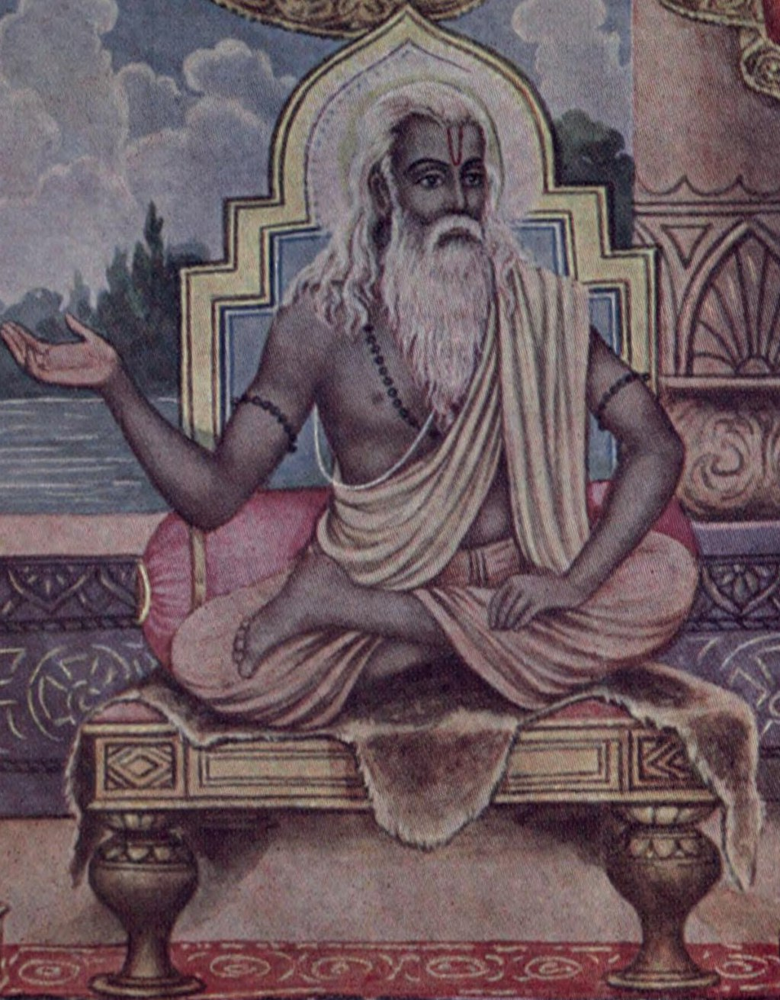

 The Upanishads (/uːˈpænɪˌʃædz, uːˈpɑːnɪˌʃɑːdz/;[1] Sanskrit: उपनिषद् Upaniṣad [ˈʊpɐnɪʂɐd]) are late Vedic Sanskrit texts of Hindu philosophy which form the foundations of Hinduism.[2][3][note 1][note 2] They are the most recent part of the Vedas, the oldest scriptures of Hinduism, and deal with meditation, philosophy, and ontological knowledge; other parts of the Vedas deal with mantras, benedictions, rituals, ceremonies, and sacrifices.[6][7][8] Among the most important literature in the history of Indian religions and culture, the Upanishads played an important role in the development of spiritual ideas in ancient India, marking a transition from Vedic ritualism to new ideas and institutions.[9] Of all Vedic literature, the Upanishads alone are widely known, and their central ideas are at the spiritual core of Hinduism.[2][10] The Upanishads are commonly referred to as Vedānta. Vedanta has been interpreted as the "last chapters, parts of the Veda" and alternatively as "object, the highest purpose of the Veda".[11] The concepts of Brahman (ultimate reality) and Ātman (soul, self) are central ideas in all of the Upanishads,[12][13] and "know that you are the Ātman" is their thematic focus.[13][14] Along with the Bhagavad Gita and the Brahmasutra, the mukhya Upanishads (known collectively as the Prasthanatrayi)[15] provide a foundation for the several later schools of Vedanta, among them, two influential monistic schools of Hinduism.[note 3][note 4][note 5] Around 108 Upanishads are known, of which the first dozen or so are the oldest and most important and are referred to as the principal or main (mukhya) Upanishads.[18][19] The mukhya Upanishads are found mostly in the concluding part of the Brahmanas and Aranyakas[20] and were, for centuries, memorized by each generation and passed down orally. The mukhya Upanishads predate the Common Era, but there is no scholarly consensus on their date, or even on which ones are pre- or post-Buddhist. The Brhadaranyaka is seen as particularly ancient by modern scholars.[21][22][23]